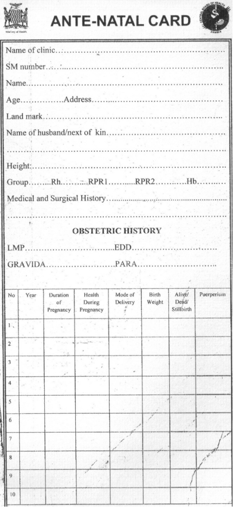

Gynaecological history
similar to General history but we add some few changes.
Add
-
Parity ( p ) :
Parity state of previous pregnancy beyond period of viability
Nullipara
never completed pregnancy beyond viability May or not have aborted previously
Primipara
one who has delivered one viable child
Multipara
one who has delivered 2 or 3 viable children
Grand multipara
4 or more births
contnue with general history
Demography
Presenting complaints
Hx of presenting complaints
Review of systems
Past medical and family hx
Drug hx
Social hx
Add
Ante natal care history
